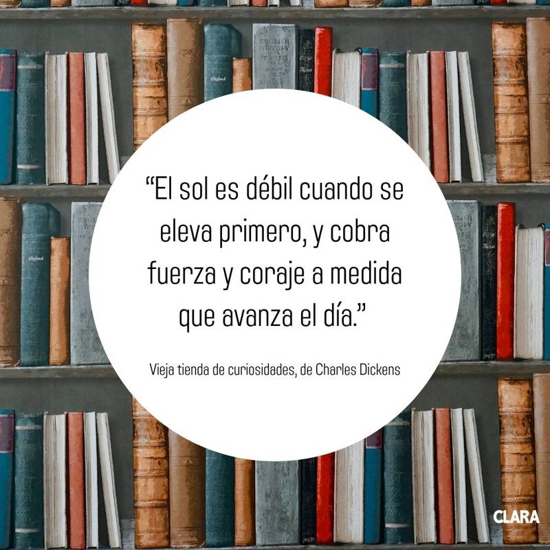
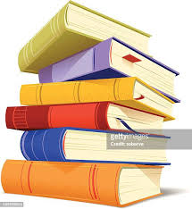
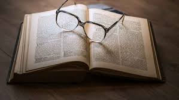
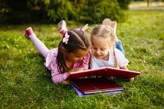
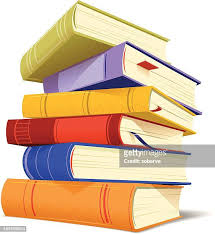
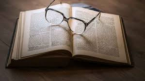
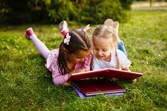

Hay frases que definen tu vida, y muchas de ellas proceden de los libros. Si quieres decir una frase de un libro para expresar cómo percibes tu propia vida, o estás buscando hacer tu propia frase literaria, aquí tienes la mejor fuente de inspiración.
“El sol es débil cuando se eleva primero, y cobra fuerza y coraje a medida que avanza el día.” Vieja tienda de curiosidades, de Charles Dickens
"No soy un pájaro y ninguna red me atrapa. Soy un ser humano libre con una voluntad independiente." Jane Eyre, de Charlotte Bronte
"No sé lo que puede llegar, pero sea lo que sea, iré hacia ello riéndome." Moby Dick, de Herman Melville
“¡Qué maravilloso es que nadie necesite esperar ni un solo momento antes de comenzar a mejorar el mundo!” El Diario de Ana Frank, de Ana Frank
"Algún día encontraré las palabras correctas, y serán simples." The Dharma Bums, de Jack Kerouac
Seas quien seas, hagas lo que hagas, cuando deseas con firmeza alguna cosa es porque este deseo nació en el alma del universo. Es tu misión en la tierra.” El Alquimista, de Paulo Coelho
Y una vez disipados los malos olores del pasado, quería ahora inundarlo de fragancias.” El Perfume, de Patrick Süskind
“Siento que me estoy moviendo hacia delante a la vez que alejándome de algo, y todo es posible.” American Psycho, de Bret Easton Ellis
"No hay mayor agonía que llevar una historia no contada dentro de ti." Yo sé por qué canta el pájaro enjaulado, de Maya Angelou
“Y te elegiría a ti; en cien vidas, en cien mundos, en cualquier versión de la realidad, te encontraría y te elegiría.” El caos de las estrellas, Kiersten White
“A mí me bastaría con estar seguro de que tú y yo existimos en este momento.” Cien años de soledad, Gabriel García Márquez
frases de libros sobre el amor
No es sencillo decir te amo, por eso muchas veces buscamos lo que los escritores dicen con el amor, para poder expresar esta emoción a través de frases de libros. Así que si quieres una frase poética sobre el amor que puedas dedicar, has llegado al lugar adecuado.

“Crees que sabes todas tus posibilidades. Entonces, otras personas llegan a tu vida y de repente hay muchas más.” El reino de la posibilidad, de David Levithan
“Nada hay en el mundo, ni hombre ni diablo ni cosa alguna, que sea para mí tan sospechoso como el amor, pues éste penetra en el alma más que cualquier otra cosa. Nada hay que ocupe y ate más al corazón que el amor. Por eso, cuando no dispone de armas para gobernarse, el alma se hunde, por el amor, en la más honda de las ruinas.” El Nombre de la Rosa, de Umberto Eco
Si la gente simplemente ama a los demás solo un poco, pueden ser muy felices.” Germinal, de Émile Zolas
“Amor y deseo son dos cosas diferentes; que no todo lo que se ama se desea, ni todo lo que se desea se ama.” Don Quijote de la Mancha, de Miguel de Cervantes
.jpeg)
 




